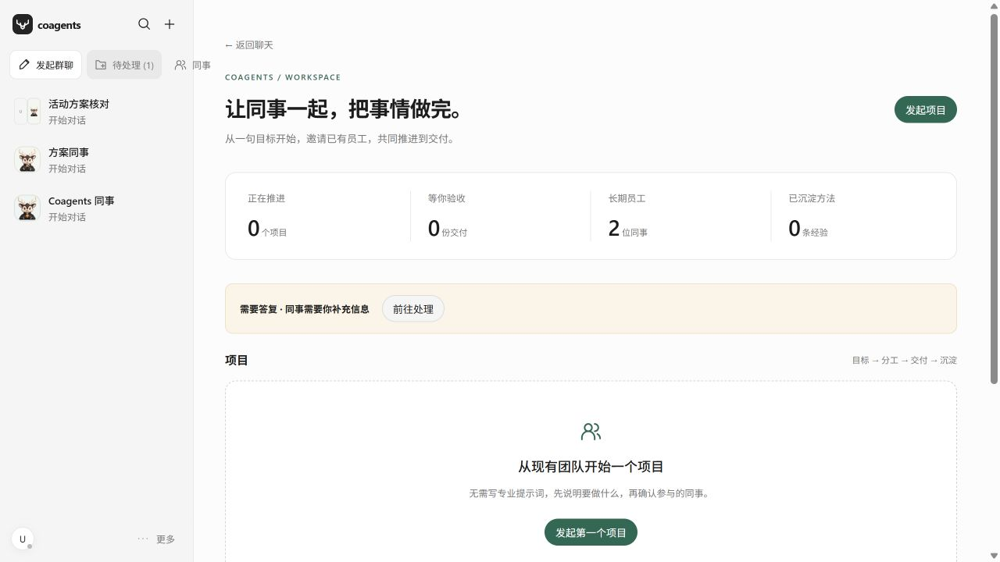

既能交流，也能推进工作
项目成员和职责定义工作关系；群里的安排对应实际制作与复核任务，进展回到公开记录。等待、停止和需要人处理的问题有明确的状态。
COAGENTS / 数字同事协作 · 0.41.0
负责人在项目群里提出目标，数字同事公开分工、制作文件、交给非作者复核，再由人决定是否接受。CoAgents 关心的不只是“谁说了什么”，还包括“谁正在做、当前是哪一版、依据在哪里”。
2026-11-03 更新：当前平台录屏、待处理入口截图与最新适配记录。公开流程演示支持分工、修订、独立复核与人工验收，采用合成数据；下方平台录屏的具体范围单独说明。
PLATFORM WALKTHROUGH / 2026.11.03
录制自 CoAgents 0.41.0 当前应用，使用独立内存数据库与固定接口回放。展示员工、群聊澄清、单次操作确认、项目约定、人工登记交付与逐项验收。录制在独立无头浏览器中完成。
CURRENT BUILD / 0.41.0
最新适配补充统一待处理卡片，聚合待答复、待授权、交付待验收、答复送达失败与输入超限事项，并可回到对应群聊。派工前重新检查项目、员工和任务状态，减少状态改变后沿用旧安排的风险。该次工程验证记录为 409 项测试通过。

源码核对：2026-11-03，提交 ca7b4086e128；版本仍为 0.41.0。409 项为最新适配任务的测试记录；下方 402 项保留为 2026-10-23 新环境复现的历史基线。
01 / 协作问题
多人参与的工作会遇到一连串具体问题：同事按哪个目标动手？中途要求改变，旧任务如何处理？交出的文件由谁检查？被退回的稿件是否还能找到？CoAgents 把这些问题放进项目、员工、群消息、任务和交付版本之间的关系中。
项目成员和职责定义工作关系；群里的安排对应实际制作与复核任务，进展回到公开记录。等待、停止和需要人处理的问题有明确的状态。
文件、作者、内容版本与人类要求共同决定复核对象。后续修订保留旧稿与旧意见，让“已经检查”有可追踪的适用范围。
02 / 工作链
员工加入项目，群内公开安排制作、依赖和复核职责。
运行层返回正文、文件及执行记录，作者交稿与自查分别保留。
检查绑定实际文件版本；改稿后重新核对，旧结论留存。
交审、修订和接受分别记录，模型完成不直接结束项目。
示意场景：一位同事写活动方案，另一位核对预算；负责人中途调整时间后，原作者修订，复核者读取新版再交审。这是用于解释对象关系的场景，不计作本轮真实模型验收。
03 / 关键设计
员工身份、项目任职与群会话分别管理。不同群与实例的执行链需要明确映射；会话分开不能替代设备文件系统或工具权限的隔离。
作者自查保留为制作依据；正式复核要求非作者核对实际原件。代价是增加协调与等待，但可以追问结论由谁、对哪个版本作出。
在途补充、原作者改稿、并行修订和依赖重排需要保留关联。旧稿与旧复核不会因新版本出现而被抹掉；失效的结论不能继续当作当前通过。
执行成功、交付待审与人工接受是不同状态。轮次预算、暂停与恢复限制协作的运行范围，完成条件以当前交付与验收状态为准。
04 / 工程实现
原生前端提供中文协作工作台
保存消息、派工、轮次、文件版本、复核与验收关系
适配器关联执行回执，公开结果返回群聊
SQLite 保留员工、项目和工作记录。处理幂等与恢复时，既要避免重复派发，也要避免把旧轮次重新解释为一次新执行。
当前应用无第三方运行依赖与前端构建步骤。恢复时补充 Node 版本检查、空数据目录与 Windows 启动入口；凭据读取保留严格文件权限校验。
本轮修复集中于 Windows Cookie 文件权限：保留 POSIX 校验，同时对 Windows 使用 NTFS ACL 检查，并测试宽泛读取授权会被拒绝。兼容改动有独立验证，原始交接材料保持可核对。
05 / 复现与边界
2026-10-23 新环境复现：全量测试无失败、跳过或取消，语法检查通过。Windows 身份相关测试 5 项通过，覆盖正常读取与宽泛授权拒绝。
全新 SQLite 启动成功，首页与状态 API 返回 200；重启保留默认员工。该环境未配置 HeliX 会话，未产生新的真实模型项目。
待完成的新环境验收：HeliX 正式登录、员工实例绑定、真实模型自动分工、原件下载、互审、修订及人工验收的完整链路。测试通过不直接说明多人生产部署、模型质量或业务收益已经验证。
目前适用于本机单用户原型验证。多人 SSO、组织级授权、执行层项目沙箱、工具授权闭环与完整云端同步仍需进一步建设；未把已有任务输入范围控制视为底层安全隔离。